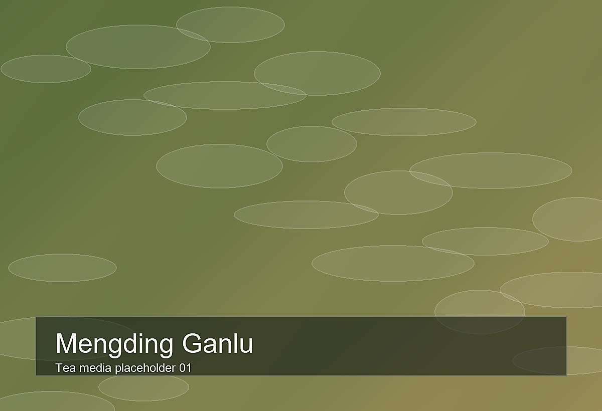

Mengding Tea Media Gallery
数字博物馆
穿越两千年的茶文化之旅，从一片叶子读懂中华文明
蒙顶山，世界茶文化发源地。自西汉至今两千余年，这片土地孕育了最悠久的茶文化传承。在这里，您将穿越历史长河，感受千年茶韵，探索从一片绿叶到一盏香茗的神奇旅程。
追溯两千年的茶史长河
品鉴各类茶叶珍品，欣赏传统茶器文物
探索制茶奥秘，领略国家级非遗技艺
获取参观信息，规划您的线上博物馆之旅

中国最古老的名茶之一，始于西汉，外形紧卷多毫，汤色碧绿，滋味鲜爽回甘，被誉为"人间甘露"。